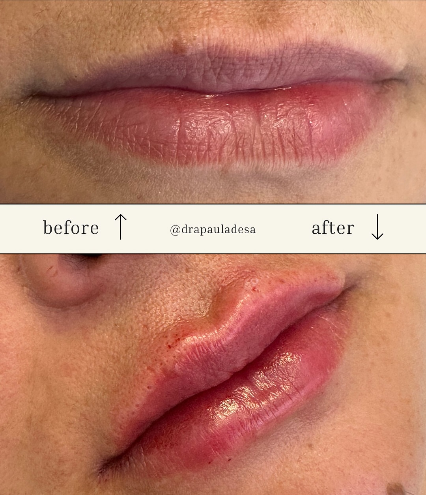
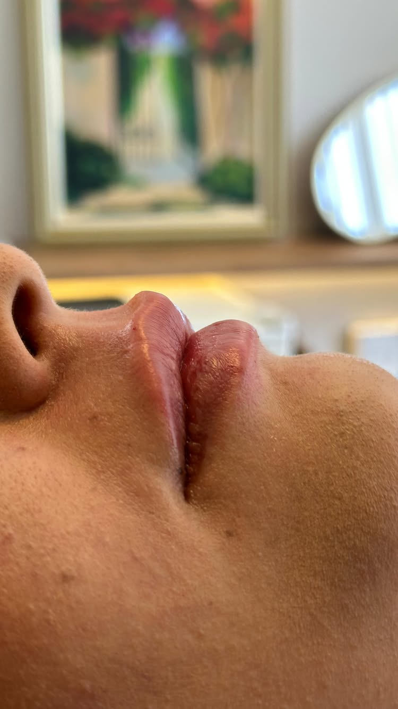
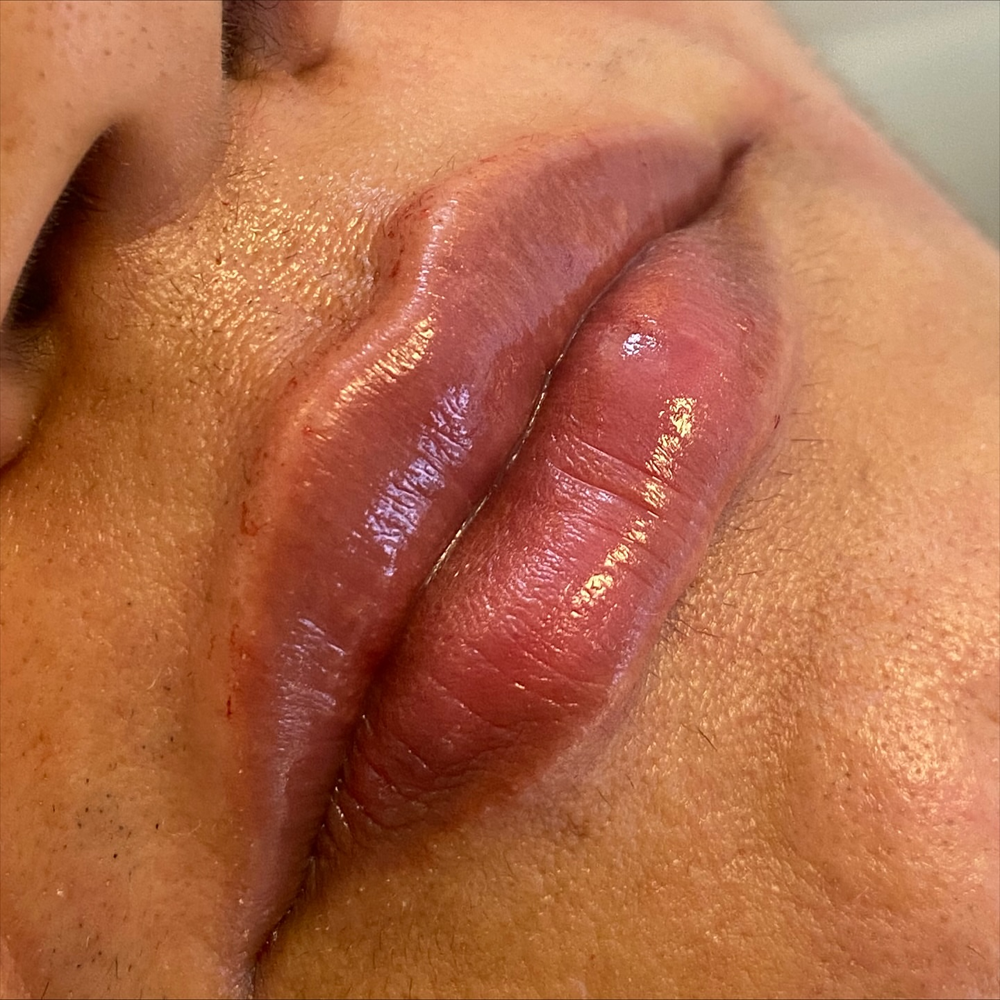

Técnica especializada, olhar estético apurado e respeito pela harmonia natural do seu rosto. Cada procedimento é planejado individualmente.
A Dra. Paula de Sá é Especialista em Harmonização Orofacial — um segmento que exige formação técnica específica, muito além dos procedimentos convencionais. Com consultório em Lagoa Nova, Natal/RN, ela alia conhecimento aprofundado a um olhar estético treinado para realçar a harmonia natural de cada paciente.
Seu diferencial vai além da execução: ela é também mentora, formando outros profissionais da saúde em técnicas avançadas. Quem ensina domina o que pratica.
Referência técnica em Natal/RN — procurada por outros profissionais que querem aprender. Nota 5,0 no Google Maps, sem uma avaliação negativa.
Abordagem global que equilibra as proporções do rosto com técnica orofacial especializada. Resultado natural e duradouro.
Definição, volume e simetria dos lábios com ácido hialurônico. Técnica precisa para resultados harmoniosos e expressivos.
Suavização de rugas dinâmicas, contorno facial e tratamento de hiperidrose. Aplicação segura e dosagem personalizada.
Estimula a produção natural de colágeno para firmeza e rejuvenescimento progressivo. Resultado que melhora com o tempo.



Nota máxima no Google, sem exceções. Cada avaliação reflete o cuidado que a Dra. Paula coloca em cada atendimento — da consulta ao resultado final.
Entre em contato pelo WhatsApp para agendar sua avaliação personalizada. Consultório em Lagoa Nova — um dos bairros mais acessíveis e nobres de Natal/RN.
Agendar pelo WhatsApp